class: center, middle # Media latencies _A physical and historical perspective_ Paul Adenot, <span class="logo">mozilla</span> W3C Kobe Developer Meetup — 2025-11-09 ??? Travel through time and space while talking about media broadcast latencies media broadcast is the electronic diffusion of audio and/or video content to a large audience. --- 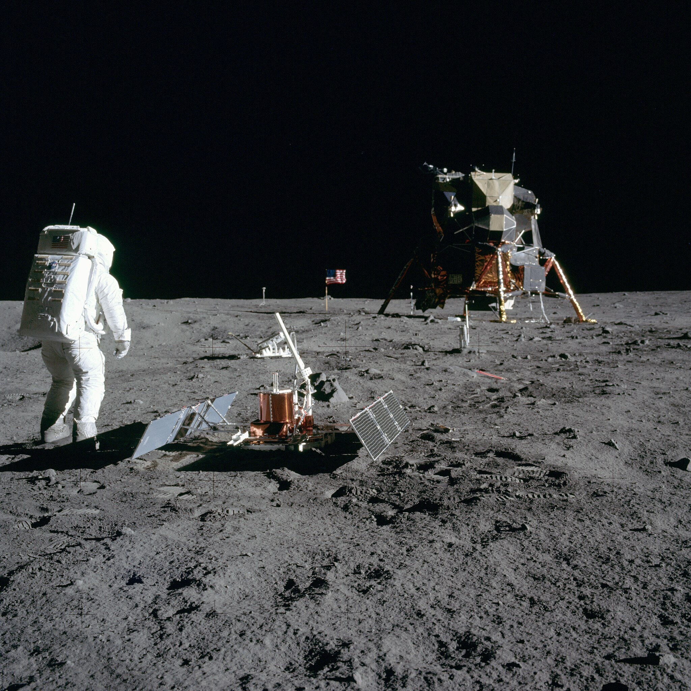 ??? more than half a century ago Neil Armstrong and Buzz Aldrin walked on the moon The "walk on the moon" Live broadcast, and also regular film made of the event -- <div style="margin-left: 0; z-index: 100; position: absolute; left: 1.5em; top: 0.3em; color: white; text-shadow: -2px -2px 0 #000, 2px -2px 0 #000, -2px 2px 0 #000, 2px 2px 0 #000;"> <h1 style="font-size: 45px !important;">Appolo 11</h1> </div> -- <div style="z-index: 100; position: absolute; right: 1.5em; bottom: 0.3em; color: white; text-shadow: -2px -2px 0 #000, 2px -2px 0 #000, -2px 2px 0 #000, 2px 2px 0 #000;"> <h1 style="font-size: 45px !important;">July 16th, 1969</h1> </div> ?? # 600M tv viewers, 3.6B, 16.7 % --- class: smaller # Latency breakdown <table> <thead> <td>Segment</td> <td>Distance</td> <td>Time</td> </thead> <tbody> <tr> <td>Moon to Honeysuckle Creek (🇦🇺)</td><td>384 000 km</td><td>≅ 1280ms</td> </tr> <tr> <td colspan="2">SSTV (325p) to NTSC (525p) conversion</td><td>≅ 200ms</td> </tr> <tr> <td>Australia to Houston (🇺🇸) (radio + cable + processing)</td><td>13 400 km</td><td>≅ 400ms</td> </tr> <tr> <td colspan="2">Houston processing (live commentary, etc.)</td><td>≅ 100ms</td> </tr> <tr> <td colspan="2">USA broadcast</td><td>≅ 150ms</td> </tr> <tr> <td colspan="2"><strong>Total</strong></td><td>≅ <strong>2130ms</strong></td> </tr> </tbody> </table> ??? - 325p 10fps - Initial broadcast to honeysuckle creek because it was the only available dish to pick up the signal over the horizon - South west of Sidney - Later switched to a more powerful dish --- # Latency -- The duration between the cause and the effect in a system -- Has a unit of time (nanosecond, millisecond, second, etc.) --- # Latency lower bound The speed of light: <span style="font-family: serif; font-size: 1.3em;">_c_</span>. -- But it also is medium-dependant: About 300 000 000 <span style="font-family: serif; font-size: 1em;"><em>m.s</em><sup style="font-size: 0.6em">-1</sup></span> in air or vacuum -- About 204 000 000 <span style="font-family: serif; font-size: 1em;"><em>m.s</em><sup style="font-size: 0.6em">-1</sup></span> in optical fiber (refractive index ~1.5) -- About 150 000 000 <span style="font-family: serif; font-size: 1em;"><em>m.s</em><sup style="font-size: 0.6em">-1</sup></span> in copper / gold traces (signal propagation, FR-4 PCB) --- # Duration → Distance Radio wave in space or in air, laser in a fiber, electrical signal in a copper or gold trace on a PCB: <table> <thead> <td>Duration</td> <td>Air</td> <td>Fiber</td> <td>Copper</td> </thead> <tbody> <tr> <td>1 ns</td><td>30 cm</td><td>20 cm</td><td>15 cm</td> </tr> <tr> <td>1 ms</td><td>300 km</td><td>200 km</td><td>150 km</td> </tr> <tr> <td>1 s</td><td>300 000 km</td><td>180 000 km</td><td>150 000 km</td> </tr> </tbody> </table> --- class: small # Distance → Duration <table> <thead> <tr> <th>Scenario</th> <th>Distance</th> <th>Air</th> <th>Fiber</th> </tr> </thead> <tbody> <tr> <td>Moon → Earth</td> <td>384 400 km</td> <td>1.283 s</td> <td>1.882 s</td> </tr> <tr> <td>Paris → Auckland</td> <td>18 545 km</td> <td>61.88 ms</td> <td>90.81 ms</td> </tr> <tr> <td>Kobe → Montevideo</td> <td>19 770 km</td> <td>65.93 ms</td> <td>96.73 ms</td> </tr> </tbody> </table> --- class: center, middle # ... (49 years later) ??? French presenter --- 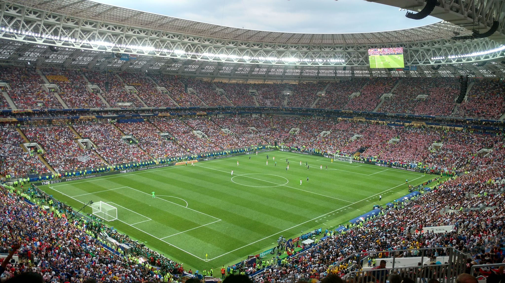 <div style="margin-left: 0; z-index: 100; position: absolute; left: 3em; top: 10em; color: white; text-shadow: -2px -2px 0 #000, 2px -2px 0 #000, -2px 2px 0 #000, 2px 2px 0 #000;"> <h1 style="font-size: 45px !important;">FIFA World Cup final July 11th, 2018</h1> </div> ??? <table> <tr> <td>Moscow → Paris</td> <td>3000 km</td> <td>10 ms</td> <td>15 ms</td> </tr> </table> -- <div style="margin-left: 0; z-index: 100; left: 8em; position: absolute; top: 50%; color: white; text-shadow: -2px -2px 0 #000, 2px -2px 0 #000, -2px 2px 0 #000, 2px 2px 0 #000;"> <h1>(🇫🇷 4 — 2 🇭🇷 btw)</h1> </div> ??? 1.12B tv spectator, 7.6 B people on earth, 14.7% --- class: center middle # Latency was **HORRIBLE** ??? Paris is one of the densiest cities in the world Sometimes multiple seconds between two different bars in the same street, ruining surprise People's phone notification push ruining the fun -- (but hey it was in 4k HDR for some broadcasters!) --- class: smaller # Rough breakdown, broadcast side <table> <thead> <tr> <th>Segment</th> <th>Latency</th> </tr> </thead> <tbody> <tr> <td>Camera capture → production truck → host broadcaster feed</td> <td>500-1000 ms</td> </tr> <tr> <td>Satellite uplink / downlink to international distributors</td> <td>250-500 ms</td> </tr> <tr> <td>National broadcaster encoding + muxing</td> <td>1000-2000 ms</td> </tr> </tbody> </table> ??? Signal also sent from stadium by fiber, but aligning on latest --- # Viewing latency <table> <thead> <tr> <th>Platform</th> <th>Latency</th> </tr> </thead> <tbody> <tr> <td>Terrestrial DVB-T</td> <td>~3–5 s</td> </tr> <tr> <td>Satellite TV</td> <td>~5–7 s</td> </tr> <tr> <td>Streaming / web / mobile apps</td> <td>20–60 s 💀</td> </tr> </tbody> </table> ??? --- class: center, middle, biggest # But why? --- class: center, middle, biggest # Network problem ? --- class: small # Measuring internet latency From my hotel room in Kyoto to my Mozilla workstation in Paris (9720 km, 32.43 ms in air, 47.60 ms in fiber): <pre> <code> $ ping paul.cx PING paul.cx (139.162.227.11): 56 data bytes 64 bytes from 139.162.227.11: icmp_seq=0 ttl=45 time=<b style="color: red;">242.899 ms</b> 64 bytes from 139.162.227.11: icmp_seq=1 ttl=45 time=<b style="color: red;">242.424 ms</b> 64 bytes from 139.162.227.11: icmp_seq=2 ttl=45 time=<b style="color: red;">243.894 ms</b> ... </code> </pre> (Round-trip, divide by two for one-way) --- class: smaller # Network latencies Networks (local fiber, submarine cable, etc.) rarely (never) follow the shortest path (measures via `mtr -z`): -- <table> <thead> <tr> <th>Segment</th> <th>Distance (km)</th> <th>Duration (ms)</th> </tr> </thead> <tbody> <tr> <td>Computer in Kyoto → Osaka</td> <td>60</td> <td>8.1</td> </tr> <tr> <td>Osaka → San Jose (Pacific)</td> <td>8 200</td> <td>40</td> </tr> <tr> <td>San Jose → Ashburn (USA)</td> <td>4 000</td> <td>19</td> </tr> <tr> <td>Ashburn → Paris (Atlantic)</td> <td>6 200</td> <td>40</td> </tr> <tr> <td><strong>Total </strong></td> <td><strong>18 460</strong></td> <td><strong>117</strong></td> </tr> </tbody> </table> -- Kyoto is <b>9 700km</b> from Paris, theoretical minimum is therefore: <math xmlns="http://www.w3.org/1998/Math/MathML"> <mrow> <mi>t</mi> <mo>=</mo> <mfrac> <mrow> <mn>9</mn> <mo>,</mo> <mn>730</mn> <mi> </mi> <mi>km</mi> </mrow> <mrow> <mn>204</mn> <mo>,</mo> <mn>218</mn> <mi> </mi> <mi>km</mi> <mo>/</mo> <mi>s</mi> </mrow> </mfrac> <mo>≈</mo> <mn>47.64</mn> <mi> </mi> <mi>ms</mi> <mo> </mo> <mo>(≈ twice as fast than reality)</mo> </mrow> </math> --- class: middle, center # ...that's not it --- # Non-compressible minimum ### As software developers, we (generally) can't make the network have lower latency... -- ### But we can do our best to not add too much overhead on top of the network latency! --- # Glass to glass latency **Duration** from a **photon hitting the camera sensor** on the capture device filming a scene to the photon for the same action **leaving the screen of the device** playing the video of the scene remotely. (**not** counting physiological response). -- Numerous overhead sources inside the various devices between the capture and playback! --- class: smallest # Live broadcast latency <table> <thead> <tr> <th>Stage</th> <th>Latency</th> </tr> </thead> <tbody> <tr> <td>Capture @ 30fps (frame rate + image processing)</td> <td>40 ms</td> </tr> <tr> <td>Encode (x264, no B-frame, 1 frame pipeline, e.g. tuned OBS)</td> <td>~30–50 ms</td> </tr> <tr> <td>Packetize & hand-off (RTMP/SRT mux + OBS/OS queues)</td> <td>~5–10 ms</td> </tr> <tr> <td>Uplink & first-mile network (Wi-Fi/ISP)</td> <td>10–100 ms</td> </tr> <tr> <td>Paris → ingestion server in the EU</td> <td>~10–20 ms</td> </tr> <tr> <td>Ingestion server to Japan</td> <td>~100 ms</td> </tr> <tr> <td>Cloud transcode to multiple resolutions</td> <td>~0.8–1.5 s</td> </tr> <tr> <td>Packaging into a container, waiting for a full segment</td> <td><strong>multiple seconds</strong></td> </tr> <tr> <td>CDN propagation / cache</td> <td>~0.2–0.5 s</td> </tr> <tr> <td>CDN to user device (network)</td> <td>~20-100ms</td> </tr> <tr> <td>Local player buffering multiple segments</td> <td><b>n × mutiple seconds<b></td> </tr> <tr> <td>Local player buffering (smooth against network glitches)</td> <td>~0.03–2.5 s</td> </tr> <tr> <td>Demux/Decode in hardware on local device</td> <td>~10–40 ms</td> </tr> <tr> <td>Compositor → Display @ 60fps</td> <td>16 ms</td> </tr> <tr> <td><b>Rough total</b> (assuming typical 5s segment size)</td> <td><b>20-60s 💀</b></td> </tr> </table> ??? Toy example, not a big broadcast, using a basic HLS or DASH player, not tuned aggressively. --- 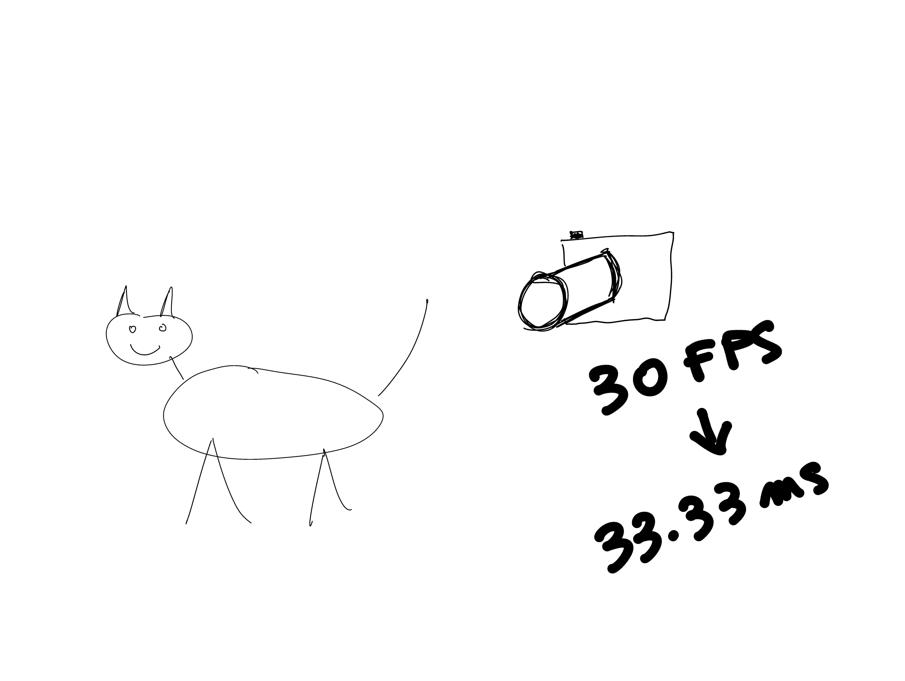 <div style="margin-left: 0; z-index: 100; position: absolute; left: 1.5em; top: 0.3em;"> <h1 style="font-size: 45px !important;">Capture</h1> </div> ??? Capture a cat at 30fps, so this translates to an interval between images of 1000 / 30 = 33ms, so we can count roughy that duration as an initial latency. --- 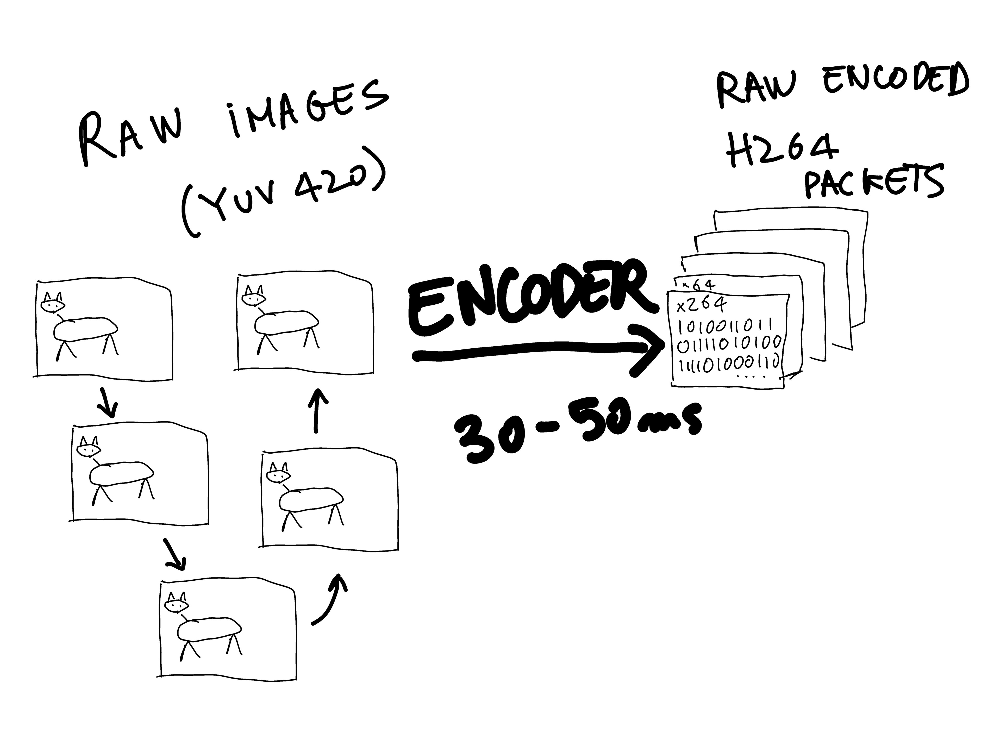 <div style="margin-left: 0; z-index: 100; position: absolute; right: 1.5em; bottom: 0.8em;"> <h1 style="font-size: 45px !important;">Encoding</h1> </div> ??? Now we encode our frames. We assume we've read a few tutorials online, so we configure OBS and ffmpeg correctly, and this adds a few dozen milliseconds of latency. This gets us a series of "packets", each containing a single image. They need to be decoded in order. --- 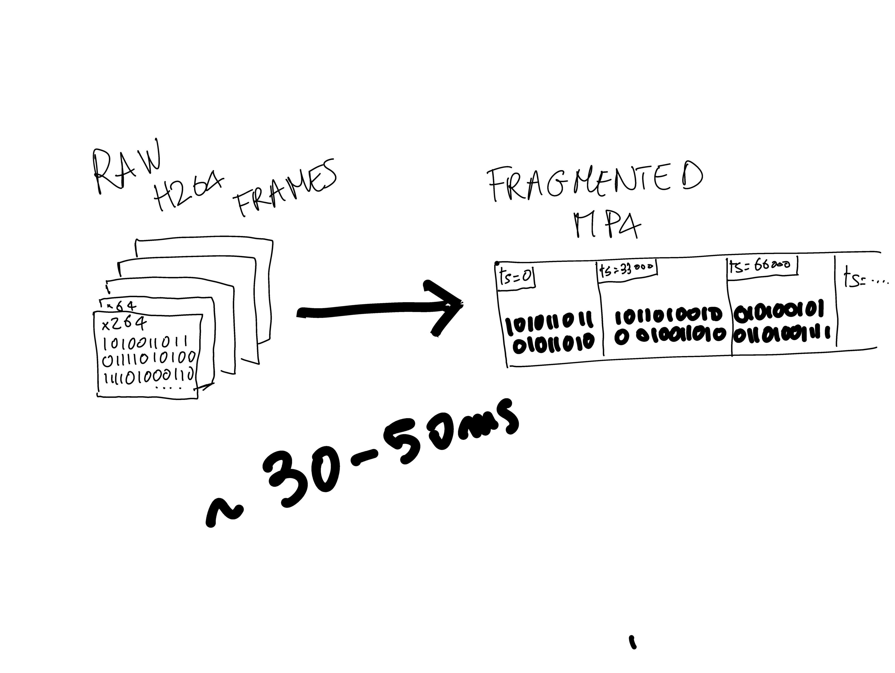 <div style="margin-left: 0; z-index: 100; position: absolute; left: 1.5em; top: 0.3em;"> <h1 style="font-size: 45px !important;">Muxing</h1> </div> ??? Then it is time to package a series of encoded frames, associated with their respective timestamp, in a binary stream. --- 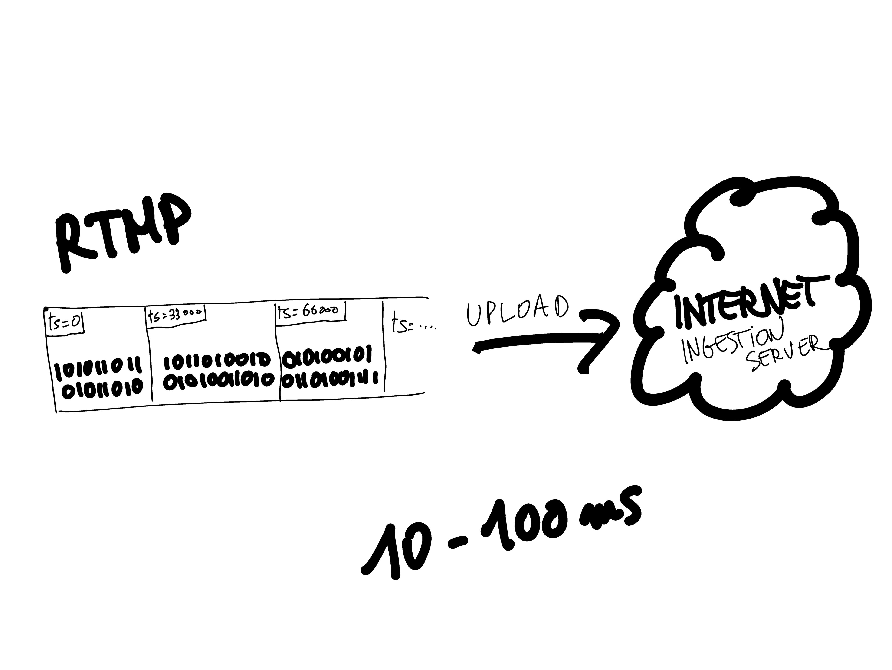 <div style="margin-left: 0; z-index: 100; position: absolute; left: 1.5em; top: 0.3em;"> <h1 style="font-size: 45px !important;">Upload</h1> </div> ??? A common protocol for this was historically RTMP, but SRT is a more modern alternative. We upload to an ingestion server, and that takes up to 100ms, depending on where it is. --- 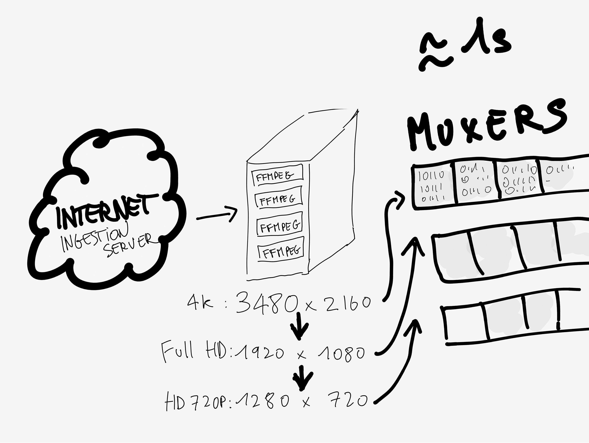 <div style="margin-left: 0; z-index: 100; position: absolute; left: 1.5em; top: 0.3em;"> <h1 style="font-size: 45px !important;">Transcoding / Remuxing</h1> </div> ??? Then the service typically encodes at various different resolutions, so that the stream can be consumed on devices with a slow internet. Let's say this add up to a second or so of latency, this can vary a lot. This system also packages the encoded packets into a container, typically fragmented mp4, and is is when the problems begin: those segments can be very long, typically multiple seconds long. --- 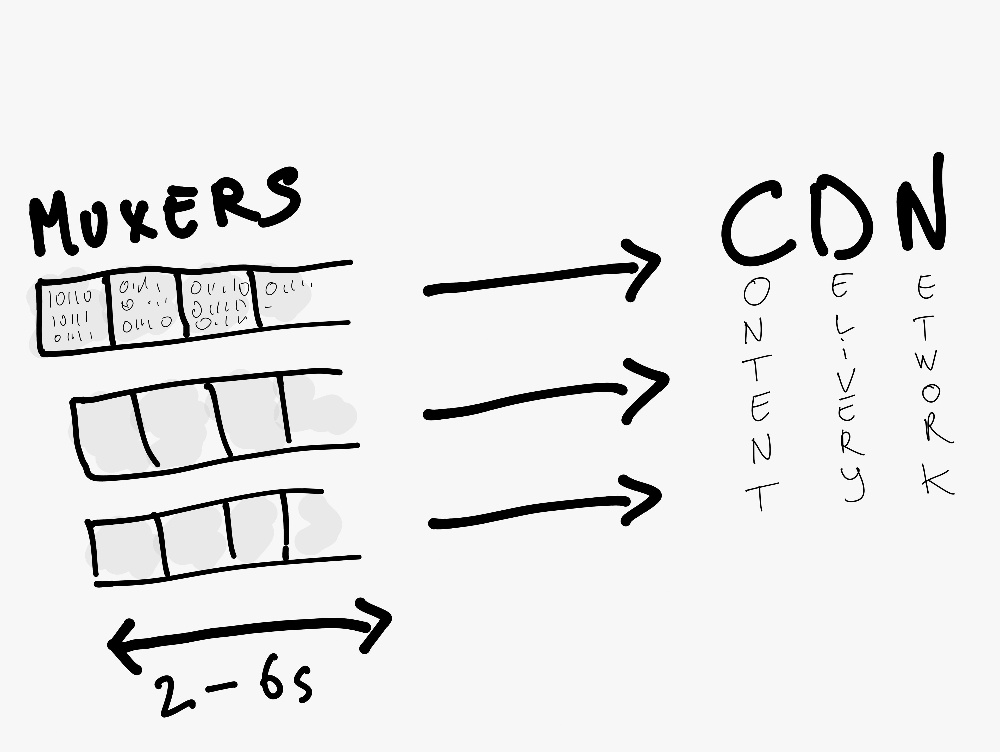 <div style="margin-left: 0; z-index: 100; position: absolute; left: 1.5em; top: 0.3em;"> <h1 style="font-size: 45px !important;">Upload to CDN</h1> </div> ??? Then the system sends the segments to a CDN, so that the segments can be consumed in multiple locations on earth efficiently. --- 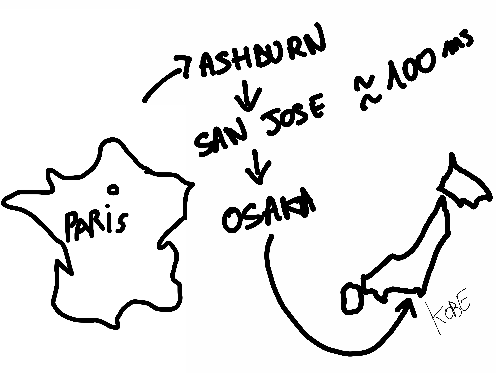 <div style="margin-left: 0; z-index: 100; position: absolute; left: 1.5em; top: 0.3em;"> <h1 style="font-size: 45px !important;">CDN propagation</h1> </div> ??? The CDN propagates to somewhere close to Kobe, via a route that is, again, sometimes not optimal for latency, but we can't do much about it at our level. --- 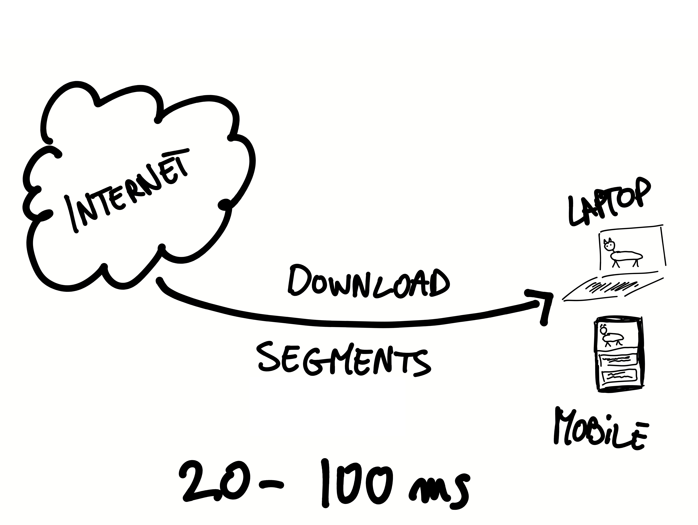 <div style="margin-left: 0; z-index: 100; position: absolute; left: 1.5em; top: 0.3em;"> <h1 style="font-size: 45px !important;">Download to device</h1> </div> ??? Now the user device downloads the segments. Depending on where we are w.r.t. the CDN, it can also take some time. --- 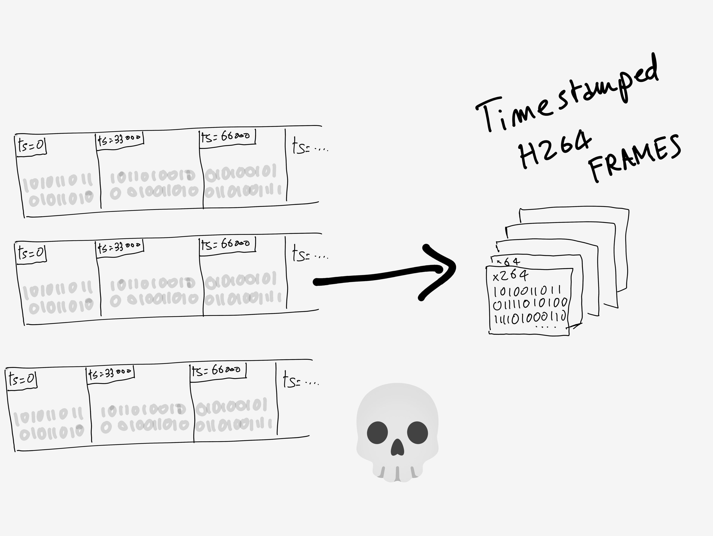 <div style="margin-left: 0; z-index: 100; position: absolute; left: 1.5em; top: 0.3em;"> <h1 style="font-size: 45px !important;">Demuxing / segment buffering</h1> </div> ??? Then we have segments on the local device. Typically, for resilience against network issues, a few segments are buffered ahead, and the latency (that can't be lowered than a segment) baloons. We "demux" the segments into raw video frames. --- 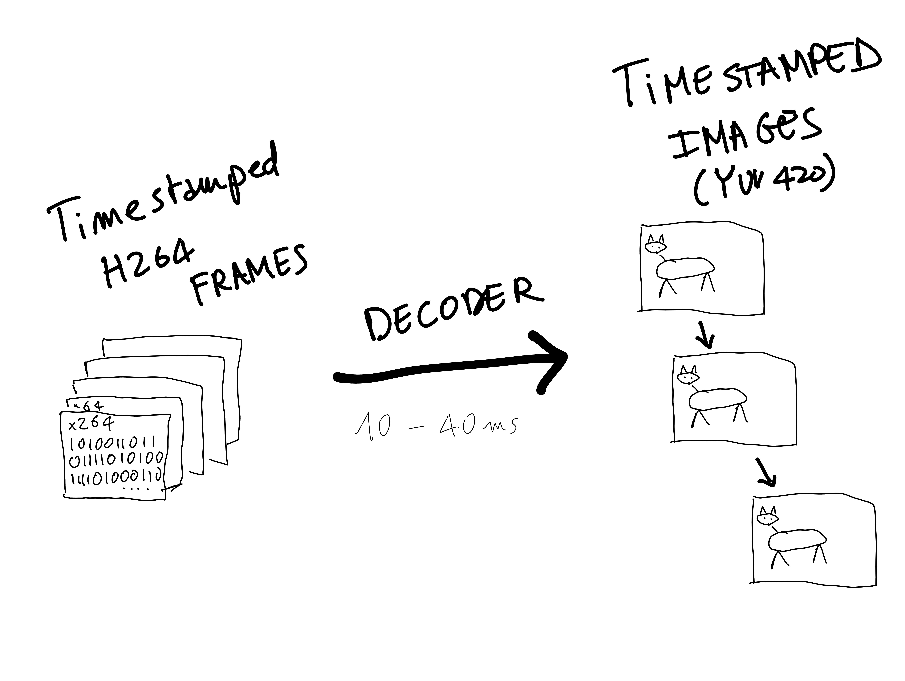 <div style="margin-left: 0; z-index: 100; position: absolute; left: 1.5em; top: 0.3em;"> <h1 style="font-size: 45px !important;">Decoding</h1> </div> ??? and then we decode those videos frames, typically in hardware. Again, we buffer a few of those frames, typically up to a second ahead. This is sometimes configurable in software. --- 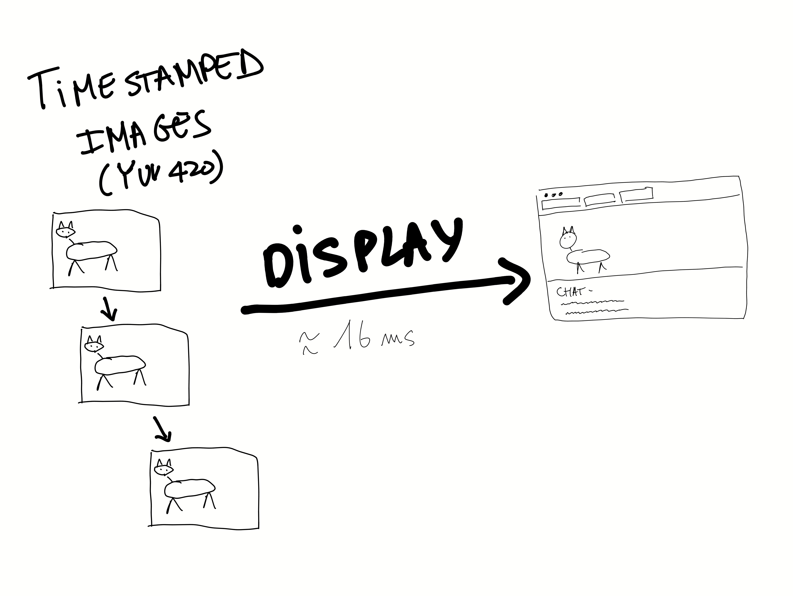 ??? At this point, we have a series of images with timestamp, and we can display then at the right time on the screen. --- class: center, middle # The problem is therefore segment-based buffering (there are other problems, but this is the biggest problem) --- class: center, middle # But wait! --- # Solutions are coming! Ingestion side: - WHIP (WebRTC-HTTP ingestion protocol, IETF draft) - DASH‑IF Live Media Ingest Protocol - ... ??? But we know the ingestion side isn't the big problem -- Playback side: - Media over QUIC (MoQ) for (web) playback --- # MoQ: Media Over QUIC 100% Web: - <b>Web Transport</b>: interface over HTTP/3, uses reliable or unreliable transport over UDP - <b>Simple custom framing protocol</b>: instead of large segment, lower granularity (frame or group of frames) - <b>Web Codecs</b>: low-level media encoding and decoding API - <b>Canvas</b>: draw the images on the screen - <b>Web Audio API</b>: low-latency audio playback **Bold** aim: < 500ms glass-to-glass latency, back to comparable to theoretical minimum --- # Comparison Traditional (HLS, DASH, etc.): - Pull **segments** (multiple seconds long) - TCP (head-of-line blocking, reliable transport) Future: - Smaller granularity: frames or chunks of frames (dozens or hundreds of milliseconds) - UDP (can make latency / reliability tradeoffs) --- class: center, middle # WIP, watch this space! <a href="https://moq.dev/" style="font-family:monospace;">https://moq.dev/</a> --- class: small # Thanks ! <dl> <dt> Slides </dt> <dd> <a href="https://padenot.github.io/wac-22/keynote">https://padenot.github.io/kobe-25/</a><br> </dd> <dt>Email</dt> <dd><a href="mailto:padenot@mozilla.com"><code>padenot@mozilla.com</code></a></dd> </dl> --- class: small # Sources - Wikipedia - https://www.bbc.com/news/technology-45499784 - https://www.bbc.co.uk/rd/blog/2018-09-latency-video-streaming - https://www.streamingmediaglobal.com/PressRelease/Low-Latency-Broadcasting-Within-Venues-at-Football-World-Cup-2018_47558.aspx?utm_source=chatgpt.com - https://www.gl-systemhaus.de/en/blog/who-cheers-first-about-latencies-in-sports-livestreaming - https://www.theguardian.com/football/2018/jul/06/livestream-of-england-match-will-have-20-second-delay-says-bbc - https://www.rfc-editor.org/rfc/rfc9317.html - https://moq.dev/